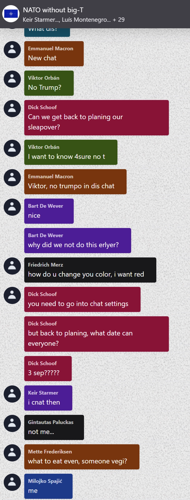

Världspolitik

Separat NATO-gruppchatt utan Trump hittad
Löken kan nu avslöja att alla andra Nato-ländernas ledare har en gruppchatt utan Trump. Det efter att en journalist på Lökens redaktion råkat läggas till i chatten av Rumäniens president Nicușor Dan. Journalisten togs snabbt bort från chatten men redaktionen hann dokumentera chattloggen innan det skedde. Bland annat planerade ledarna födelsedagsfester, middagar och sleepovers i chatten, helt utan Trump. "Jag är väldigt ledsen och besviken och därför höjer jag tullarna till EU med tio tusen procent", berättar Trump på sin plattform Truth Social. Frankrikes president Emmanuel Macron, ledaren för gruppchatten, kontrade med att höja tullarna mot USA med en miljon procent. USA:s och EU:s tullar väntas träda i kraft den 8:e september.
Upplaga 7
1/9/2025